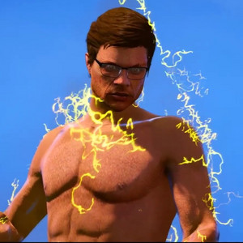

Ned Flash
Eden Flash

Eddy Flash

Symbole des trois frères
Ned / Eden / Eddy FLASH
Source : Lacro (Le GOAT)
Résumé des moments clés dans l’histoire d’Eden :
Quelques jours après son arrivée en ville, ayant déposé Mini Aaron, rebaptisé Yoni, entre les mains d’une nourrice, Eden se fit interpeller par l’unité Ghost, une unité destinée à enquêter sur les affaires paranormales de San Andreas, et fut incarcéré à la prison fédérale la plus sécurisée, Alcatraz. Il profita de ce moment pour se forger une équipe capable de le suivre et de l’aider dans sa quête visant à vaincre Adrian.Les jours passèrent, et Eden laissa de plus en plus Ned prendre le contrôle de son corps. On s’est très vite rendu compte que Ned était à l’opposé d’Eden : alors qu’Eden est sage et réfléchi, Ned était un fêtard avec un gros penchant pour les soirées arrosées. Un jour, un conflit éclata entre les deux frères, et ils se rejetèrent mutuellement avant de se séparer. Ned, heureux d’être enfin libre, commença à partir. Pris de panique, Eden rattrapa Ned pour discuter et calmer la situation. Eden décida d’expliquer à son frère l’existence d’Eddy. Il lui révéla que, en réalité, Ned n’était pas le second mais le troisième frère, et qu’Eddy avait été scellé par leur père car il était mauvais. Il ajouta qu’Eddy ne souriait jamais, était très silencieux, et qu’il craignait qu’il soit né méchant, contrairement à Adrian. Ned reprocha à son frère d’avoir un avis trop tranché sur Eddy. Bouleversé, Ned accepta de retourner avec son frère et lui fit promettre de libérer leur frère scellé. Promesse tenue, ils libérèrent Eddy. Par la suite, Eddy, ayant pour seul but de protéger ses frères, s’en prit à quiconque osait leur faire du mal.
Quelques semaines plus tard, nos deux protagonistes, souhaitant parler à leur frère qui semblait davantage un antagoniste, décidèrent de s’adresser à Eddy en passant par une expérience scientifique pour le faire sortir de leur corps. Cela ne fonctionna pas vraiment, alors Eden eut une idée, pas si géniale sur le coup : répéter ce qui s’était passé avec Ned autrefois, le rejet.
Bon, du coup, Eddy l’a mal pris, car après tout, il voulait protéger ses frères. Il cassa tout avant de partir bouder dans les rangs d’Adrian.
Résumé de l’histoire de Ned Flash (SAISON 2)
Cinématique d’introduction de Ned : Lien YouTube
Ned, après avoir répété à plusieurs reprises aux membres de l’équipe qu’il ne voulait plus les aider, notamment parce qu’ils avaient détruit la voiture qu’il venait fièrement de gagner, décida de se rendre au cimetière pour conclure un pacte avec Adrian et retrouver son frère, Eddy : Lien YouTube.
Ned reçut la balle de son grand-père Ken, avec qui il était incroyablement compatible. L’équipe décida d’arrêter Ned et de l’enfermer dans une cage initialement conçue pour contenir Eddy. Ned utilisa la puissance de la balle pour s’échapper, tuant au passage un membre de l’équipe, Léonel, sous l’emprise d’Eddy, marquant ainsi un tournant décisif dans sa vie. S’ensuivit une mini-cinématique : Lien YouTube.
L’apocalypse : Notre trio infernal, Adrian, Eddy et Ned, décida de passer à l’action et de frapper un grand coup dans l’immense fourmilière qu’est San Andreas, espérant faire trembler ceux qui se mettraient sur leur chemin : Lien YouTube.
Ah... ça, c’est les émotions, je te laisse apprécier ! Ah, et entraînement spécial aussi : Lien YouTube.
Ok, c’est LE moment de faire un gros résumé. Beaucoup de choses se sont passées depuis la dernière cinématique ! 000 posa un bracelet au poignet de Ned, le privant ainsi d’utiliser ses capacités. Ned, de retour à la case départ, privé de ses pouvoirs, fut traqué par les mercenaires engagés par 000, qui lui rendirent la vie infernale. Notre Ned national n’en pouvait plus, il était à bout de souffle : Lien YouTube.
Tomber amoureux, ça ne paye pas, il faut croire. Ned tomba amoureux d’une EMS nommée Ava, délaissant ainsi Adrian. Entre la haine et l’amour, il faut choisir. Ned, retournant dans la tombe d’Adrian, dut faire face aux conséquences de ses actes : Lien YouTube.
Bon... Ned déçut encore Adrian, et il fallait bien se faire pardonner. Du coup, Ned eut une idée géniale, si, si, je t’assure ! Le début d’une belle histoire d’amour ^^ : Lien YouTube.
Ned fit énormément de bêtises. Un nouveau Flash était possiblement en route, et Ned prit une claque de lucidité. Il décida de prendre une décision radicale et partit s’attaquer à la tombe d’Adrian pour détruire son QG ! Marre d’être toujours la victime. Il utilisa l’énergie de l’étrange marque sur son visage pour détruire le cimetière, mais se retrouva en déficit d’énergie. Oups, on me dit à l’oreillette qu’Eddy a kidnappé Ava ! Ni une ni deux, Ned saisit les balles dans ses mains pour regagner de l’énergie et partit la secourir en combattant son frère. Il en profita également pour sceller Eddy... cinq minutes, mais quand même ! Dans tous les cas, Eddy était au courant du combat contre Aaron et cela l’intéressait. Il avait un mot à faire passer à la personne qui l’avait scellé pendant quinze ans, et il accepta donc de suivre Ned. Aaron vint récupérer Ned, à bout de forces, pour avoir une petite discussion avec son fils : Lien YouTube. Après cela, Ned reçut une position et découvrit que Tata Kylie avait été missionnée par Aaron pour enseigner le mental à l’équipe et... surprise ! Daisy, petite sœur d’Eden et Ned, fit son apparition. À la fin du live, Ava proposa à Ned une injection pour l’aider à retirer la tâche sur son visage. Une petite piqûre et paf, la tâche... eh bah non, Ned s’endort. Nouvelle cinématique (lien Twitch cette fois) : Lien Twitch.
NE LIS PAS EN DESSOUS SANS AVOIR VU LA CINÉMATIQUE TWITCH !
Après la soirée, Ned décida d’aller chercher le cadavre d’Ava au QG d’Adrian pour l’enterrer. Une fois sorti du repaire, Ned n’était finalement pas de retour chez lui, du moins pas dans son monde. Il était dans un monde parallèle nommé le monde à l’envers. Chassé par des monstres et au plus bas moralement, il chercha désespérément de l’aide pour retourner chez lui. Il trouva sa famille sur Cayo Perico ; c’était les seules personnes qu’il voyait, mais eux ne le voyaient pas. Après les avoir convaincus, ils lui parlèrent d’une certaine amulette et d’un portail rouge qu’ils avaient vu en sortir. Quelque temps après, il ressortit de ce monde grâce à l’amulette, qu’il donna à 000 pour qu’ils puissent désormais ouvrir des portails sur commande. 000 révéla aussi que c’était l’une des clés pour accéder à la balle d’Adrian.
000 rendit l’amulette à Ned, prête à ouvrir des portails, tout en lui demandant de ne pas trop l’utiliser. Haha, ouais... spoiler : il l’a utilisée, et un monstre en est sorti. Il fut baptisé Ficello.
Eh bien, on apprend qu’en fait, c’est Ned qui a créé cette créature pour survivre quand Adrian lui ordonna d’aller dans la gueule du Basilic. Possédant une immunité au venin du Basilic, Ned pouvait survivre ! Forcément, Ficello retrouva son « papa » et retourna en lui, faisant réapparaître la marque sur le visage de Ned. Par la suite, il contamina June (la nourrice qui avait gardé Mini Aaron) pour qu’elle l’aime, puis la relâcha. Vint alors le jour du combat contre Aaron, après que Ned eut pris congé dans le monde à l’envers pour battre le Géant :
PART 1
PART 2 : Aaron vs Eddy, le combat le plus terrifiant - part 2 ! Cinématique
FIN DE LA SAISON 2.
SAISON 3 : Ned Flash
Vingt-et-un ans après la mort d’Aaron Flash, nous retrouvâmes Ned enfermé dans un hôpital psychiatrique, assurément différent de la dernière fois où nous l’avions vu. Il y avait plein de dessins sur les murs, et il était accompagné d’une poupée nommée Freddy, qu’il considérait comme son enfant. Quelque temps plus tard, le moment tant redouté de Ned arriva : la piqûre. À ce moment, nous retrouvâmes le 06, alias Rick Redington, une personne qui, vingt-et-un ans auparavant, avait été empoisonnée par Ned. On ignore comment il s’en était sorti, mais il était bien là, et nous comprîmes qu’il était à l’origine de tout cela. Ned se fit piquer, souffrant atrocement sur le plan psychologique. Quelques temps plus tard, il se rendit compte que la piqûre n’avait eu aucun effet sur lui, sans doute parce que son corps s’y était habitué.
Il demanda à sortir prendre l’air avec Freddy, puis tua un garde avec l’aide de ce dernier, lui brisant les bras, les jambes et le cou. En partant, il fit exploser l’hôpital et marcha sur la route. Une voiture s’arrêta à côté de lui, et une jeune femme nommée Jade lui porta secours, décidant de le ramener chez elle, ou plutôt chez son père, dans une très belle villa. Nous retrouvâmes 000 et Nicolas, et fîmes la connaissance de l’ex-femme de 000, prénommée Délya.
000 n’était pas vraiment heureux de ce retour, mais n’avait plus le choix. Il aida Ned à changer son apparence et le laissa habiter chez lui. Nous apprîmes également que le nom de 000 était Charles, bien que nous le connaissions déjà via David Jr. Cela faisait longtemps que nous n’avions plus entendu ce nom.
Nous savions aussi que 000 travaillait sur un projet parallèle sans nous en dire plus, un projet censé assurer la sécurité de Ned. 06 et le directeur de l’hôpital psychiatrique faisaient un pressing constant sur Ned. Un jour, il accepta de rencontrer l’ex-directeur de l’hôpital. Il ne céda pas à ses tentatives de manipulation et en profita pour lui briser un bras, en plus de la jambe qu’il avait perdue lors de l’explosion de l’hôpital.
Quelques jours plus tard, l’unité Ghost était de retour, main dans la main avec 06 et le directeur. Ils s’en prirent à Ned avec une technologie bien plus avancée que les précédentes. À bout de forces, il fut attrapé et mis en cellule, assommé par une balle dans la tête tirée par le directeur.
Quelques jours après, il se réveilla dans une base militaire avec d’autres détenus condamnés à mort, tous portant des colliers. Ils furent conduits dans un laboratoire secret dirigé par Edward Spenson. Nous apprîmes que le laboratoire était financé à 70 % par Zy Corp et à 30 % par Mr. Spenson et le laboratoire NUCMOLTOM.
Mr. Spenson expliqua comment allait se dérouler leur détention : quatre équipes, quatre camps, des épreuves et quatre labyrinthes (D, C, B, A). Ned faisait partie de l’équipe rouge, composée d’Esperanza, Cassie, Ezekiel et un autre personnage (Bruno, c’est ainsi qu’on appelle les personnages insignifiants).
Après s’être entraînés, le jour du premier labyrinthe arriva. Il y eut pas mal de pertes dans l’équipe : deux membres tombèrent. La nuit précédente, Ned avait creusé un trou dans le camp et en profita pour s’échapper du labyrinthe avec Esperanza, Cassie et Ezekiel. Il alla rendre visite à l’âme d’Ava, présente dans l’hôpital psychiatrique désormais abandonné, avec ses compagnons, puis se rendit chez 000 pour chercher désespérément de l’aide afin de retirer leurs colliers. Peu après leur arrivée, la SLAF (Surveillance et Lutte Anti-Flash) débarqua pour arrêter Ned.
Ironiquement, nous découvrîmes le visage de 000. Il faut croire qu’un masque peut cacher un visage, et qu’un visage peut en cacher un autre. 000 était en réalité Charles Dassault sous sa véritable identité, et Edward Spenson sous une identité dissimulée. Le schéma devint clair : le laboratoire appartenait à 100 % à 000. Ensuite, Ned fut emprisonné dans une machine « Anti-Flash », et 000 demanda à Zy de lancer le protocole. Ça ne vous rappelle rien ?
Du calme, du calme, je plaisante. À son réveil, Ned se retrouva dans une cellule, avec 000 qui l’attendait. Mais... eh, il avait retrouvé sa voix et son esprit ! 000 l’avait en fait aidé en manipulant tout le monde. En créant le laboratoire, il souhaitait permettre à Ned d’aller jusqu’au bout et empêcher 06 et le directeur de s’en prendre à lui. Petit moment chez le coiffeur, et Ned prime était de retour. Il y eut le labyrinthe C, et après celui-ci, Ned souhaita tourner la page avec Ava et en finir une bonne fois pour toutes avec son esprit. Il retourna à l’hôpital et le rasa de la surface de la planète. Après une tentative d’évasion pas vraiment glorieuse – après tout, les plans de Ned restent les mêmes –, il retourna au labyrinthe et patienta jusqu’au labyrinthe B. Après une bonne journée de galère dans ce dernier, l’équipe du laboratoire autorisa les prisonniers à faire une petite sortie en ville, leur accordant deux heures. Ned, ne voulant pas y retourner, demanda à 000 de rester dehors pour la nuit après s’être défendu contre la SLAF et les hommes armés sur Cayo Perico. 000 accepta le marché. Ainsi, Ned, Esperanza, Cassie, Eren, Ayden (alias Buzzcut) et Papy Jean-Luc étaient dehors, chez 000. Par la suite, 000 ramena Ned et Cassie dans un sous-marin pour qu’ils puissent dormir en paix.
Ahlala... notre bon vieux Ned ne serait pas Ned s’il n’avait pas fait de bêtise (du calme, il n’y a rien eu avec Cassie !). Mais nous apprîmes que, pendant la nuit, Ned fit une petite escapade hors du sous-marin. Il partit libérer des monstres retenus captifs dans le labyrinthe pour semer le chaos en ville. Il en profita pour embêter Nicolas. 000, après avoir récupéré Ned et Cassie et les avoir ramenés chez lui avec le reste de l’équipe, voulait les ramener au labyrinthe, mais Ned avait un plan de fou. Une fois 000 et Nicolas partis, Ned et l’équipe se dirigèrent vers une plage. Il s’avéra que, pendant la nuit, Ned avait subtilisé la carte bancaire de Charles et en avait profité pour acheter un navire, oui, un navire de pirate, genre.
Le plan était simple : naviguer jusqu’à entendre le chant des sirènes ! Objectif : rajeunir Papy Jean-Luc ! Ils finirent par trouver l’habitat des sirènes, mais... forcément, les hommes succombèrent au charme des sirènes, qui en profitèrent pour les dépouiller et absorber leur force vitale ainsi que l’énergie de Ned.
En allant sur un coin non loin du phare, 000 les rejoignit. Après leur avoir expliqué la situation, 000 décida de leur retirer leurs colliers. Ned, regagnant son énergie, en profita pour en libérer un peu, mais ce n’était pas suffisant. Ned était décidément un véritable gouffre à énergie. 000 avait libéré l’équipe, mais les avertit qu’ils devraient participer à deux missions : l’une consistait à aller sur la Lune, l’autre à remonter dans le temps. S’ensuivit une discussion sympathique avec Charles, qui donna des conseils à Ned, et une discussion avec Cassie, où elle lui prépara à manger et réussit à apaiser les flammes de Ned, qui, jusqu’à présent, ne s’étaient toujours pas calmées.
Une nouvelle journée se lève, et nous retrouvâmes Ned sur son navire, naviguant depuis tôt le matin. Il reçut par la suite un appel d’Eren, lui disant que tous les hommes ayant été attirés par les sirènes s’étaient retrouvés maudits, devenant des sirènes à leur tour. Ned rigola sur le coup, mais décida quand même de les aider. Il repartit voir les sirènes et obtint un rendez-vous avec la reine des sirènes, nommée Selena. Par la suite, ils se rendirent au laboratoire de 000 pour rajeunir Jean-Luc. Là-bas, Charles confia une information importante à Ned : Cassie était en réalité la fille de 06. 000 était dans la machine et comptait probablement lui donner quelques années de vie supplémentaires, mais Ned eut subitement une envie pressante et urina sur la machine pendant le processus. 000 revint sous la forme d’un enfant. Oups.
Par la suite, l’heure du rendez-vous arriva, et Ned revit Selena pour discuter de la malédiction. Elle accepta de lever la malédiction à une condition : un mariage. Elle voulait que Ned devienne le roi de son royaume, sentant qu’il était extrêmement fort et capable de défendre son royaume. Elle évoqua une éventuelle menace maritime qu’elle ne pouvait pas vaincre seule. Après une discussion avec Esperanza et Cassie, qui étaient les seules lucides et lui indiquèrent qu’accepter était une mauvaise idée, Ned accepta, à condition que Selena lève la malédiction et trouve une solution pour aider Charles à retrouver son apparence après avoir vaincu le monstre. Cassie, frustrée que Ned ne l’ait pas écoutée, décida de partir, suivie par Esperanza pour veiller sur elle. Capitaine Ned regagna alors le bateau, renommé le Phénix, pour partir en haute mer.
❗ Disclaimer : ce qui va suivre est de la faute à Syndicaze. ❗
Ned fit encore parler de lui ! Il fit exploser le Beach Club et libéra un monstre du labyrinthe, qui ramena deux personnes au labyrinthe : un homme dont on n’a pas trop de nouvelles et Jade. Il paraît que le monstre fit passer des épreuves à Jade et, une fois terminées, la jeta à l’eau. Pas de panique ! Capitaine Ned, pour son plus grand plaisir, la fit grimper sur le Phénix (suite à l’idée de Syndicaze ❗). Ned et Jade eurent une petite discussion. Ned fit savoir à Jade qu’il était conscient de la tension entre eux et qu’il ne savait pas trop comment la gérer. Jade en profita pour embrasser Ned, qui allait bientôt se marier à la reine Selena et qui avait des vues sur Cassie. Chamboulé par cet acte, Ned décida de déposer Jade sur une plage pour éviter de commettre l’irréparable.
Le jour du mariage arriva. La reine Selena s’était chargée de tout ; Ned n’avait qu’à préparer une tenue. Ned avait échangé avec Cassie, qui n’était pas vraiment enthousiaste à l’idée de ce mariage. Il lui promit qu’il n’embrasserait pas Selena. La cérémonie commença, et nous découvrîmes le peuple des océans : sirènes, tritons, Bob l’Éponge, Carlos, Carapuce et Salamèche (cherchez pas, je suis encore sous le choc de Salamèche, moi aussi). Le prêtre entama la cérémonie avec le blabla habituel, et tadaa... Cassie... non, Jade s’opposa au mariage, mais pas Cassie ? (Merci Syndicaze pour le divertissement.) Elle fut arrêtée par les gardes de la reine, et la cérémonie continua. Arriva le moment d’embrasser la mariée. Ned, qui avait promis à Cassie de ne pas embrasser Selena, se retrouva avec un « lavage de dents ++ » de la part de cette dernière. Suite à cela, Cassie et Esperanza partirent. Après un moment de discussion entre Selena et Ned, vint le moment du couronnement. Le nouveau roi des océans était là, ayant reçu la couronne et le trident, ainsi que de nouvelles capacités. Il fallait qu’il les teste !
Quelques heures avant le mariage, Ned avait dit à Cassie par message que, si elle ne venait pas, il ne lui dirait pas la vérité sur son père. Elle vint, donc Ned tint sa promesse et demanda à la voir pour lui en parler. Ils eurent une discussion où Ned lui avoua qui était son père. Cassie fut choquée par cette nouvelle, et Ned en profita pour lui parler à cœur ouvert. Cassie lui demanda s’il avait des choses à se reprocher, mais il répondit que non. Quelque temps plus tard, Ned découvrit qu’ils n’étaient pas seuls sur la petite île. Charles et Esperanza étaient là. Il le prit très mal et partit dans son coin, jusqu’à ce que Cassie lui dise qu’elle était au courant pour Jade.
Le seul à être au courant était 000, donc Ned l’appela pour savoir comment elle aurait pu obtenir cette information. 000 jura qu’il n’avait rien dit et qu’il n’était pas en cause. Ned, prudent, vérifia au cas où il était sur haut-parleur. Par-derrière, 000 proposa un tête-à-tête entre Jade, Cassie et Ned. Lors de cette rencontre, Cassie fut très agressive envers Jade, et Ned demanda qui avait menti à Cassie. Le nom de Nicolas fut donné. Ned, reprenant ses mauvaises habitudes, se mit en tête d’en finir avec ce dernier. Il lui demanda sa position et alla le chercher en volant vers une petite île. 000 était sur le point de le tuer, mais le cri d’un certain oiseau résonna dans les airs, tout comme les dernières paroles d’Aaron à son fils dans la tête de Ned. Pour la première fois de sa vie, Ned résista à une pulsion meurtrière, faisant comprendre à Nicolas que c’était sa dernière chance. Il regagna alors son tout nouveau royaume pour partir en lune de miel avec Selena.
Faut croire que Ned a vraiment changé. Il voulut construire un village pour protéger ses amis, mais comment construire un village sans argent ? Il demanda à Cassie de l’aider financièrement, mais elle était fauchée. Alors, aux grands maux, les grands remèdes ! Ned partit braquer une banque. Mission accomplie, il alla chercher les matériaux nécessaires et profita de l’aide de son peuple pour bâtir le tout nouveau village.
Il était temps de changer les choses. L’ancienne génération n’était plus, place à la nouvelle. Capitaine Ned, accompagné de son fidèle navire, le Phénix, s’envola en direction du village des Flash pour le détruire. Là-bas, il retrouva bien plus qu’un meilleur ami : un frère qui l’avait toujours défendu, Calvin Angel. Ned et Calvin ne se reconnurent pas tout de suite et avaient du mal à y croire, mais c’était bien eux. Ils discutèrent brièvement, puis Ned envoya Calvin sur le Phénix pour absorber la protection que les Flash avaient établie sur le village. Il regagna son navire et alla chercher le reste de l’équipage au Nikki Beach.
Direction le nouveau village ! Pendant que Ned établissait la protection absorbée, l’équipage découvrait les lieux. Protection établie, petit lumbago, mais Ned s’en remit vite. Il offrit une petite voiture à 000/Charles, et ce dernier en profita pour lui révéler que, lors de la discussion où Ned annonça à Cassie l’identité de son père, elle était déjà au courant grâce à 000, qui l’avait informée une heure plus tôt. Il envoya l’équipage se faire une tenue pour qu’ils aient chacun un style bien à eux, mais tout allait un peu trop bien. 06 était au magasin de vêtements et prit tout le monde en otage, voulant discuter avec sa fille, Cassie, qu’il n’avait jamais connue. Il proposa un marché à Ned, qui accepta. 06 libéra l’équipage et garda Cassie pour avoir une discussion avec elle. Ned suivit 06 grâce à 000, qui traçait son téléphone en temps réel.
Ned puisa dans son énergie pour se rendre invisible et surveilla la situation. Nous apprîmes que 06 avait blanchi le casier de Cassie, car, rappelons-le, elle était à l’origine condamnée à mort.
Ned mit fin à ce rendez-vous en arrivant officiellement sur les lieux. Ned et 06 se parlèrent et se chauffèrent. À la fin, Ned décida de récupérer Cassie pour partir vers une île, où l’enquête sur le monstre maritime devait commencer. Ned et Cassie, premiers sur place, furent accueillis par un vent glacial. Faut dire que Ned en voulait à Cassie pour la comédie qu’elle lui avait jouée. Les autres arrivèrent, et il était temps de plonger pour trouver un portail. Après quelques minutes de nage, ils trouvèrent l’endroit et y entrèrent. C’était une autre dimension, où ils devaient trouver trois symboles. Ils réussirent. Ne sachant pas quoi faire, Esperanza suggéra à Ned de donner de son énergie aux trois pierres pour voir si cela avait un effet. Cela réveilla le gardien de la dimension, l’ex-roi des océans. Il ne donna pas d’informations supplémentaires sur le monstre, mais indiqua que les trois symboles suffiraient pour le trouver. Il remarqua que l’équipage voulait voler ses coffres et décida de répliquer. Ils sortirent donc de la dimension, retournèrent au village, posèrent les coffres et firent un débrief. Charles examina les trois symboles et conclut qu’ensemble, ils formaient un chemin. Il précisa qu’il lui faudrait du temps pour en tirer quelque chose.
Ned partit avec Cassie pour discuter avec elle. Il la ramena sur le Mont Chiliad pour être tranquille et lui révéla que 000 lui avait dit qu’elle savait déjà pour son père avant leur rendez-vous, ce qu’il avait mal pris. Cassie comprenait, mais voulait savoir la vérité sur Jade. Après avoir essayé de mentir, Ned assuma et avoua que, oui, sur le bateau, ils s’étaient embrassés, mais qu’il ne ressentait rien pour elle, bien qu’il y ait une tension entre eux. Ned profita de l’occasion pour dire qu’avec Cassie, il se sentait différemment, qu’elle était la seule capable de calmer ses flammes, contrairement à Jade. Il lui dit que, même si elle était triste pour le moment, elle pourrait bientôt sourire.
Charles ramena des nuggets à Cassie à la demande de Ned, et ils s’embrouillèrent gentiment. Ned déposa ensuite Cassie au village, car elle était fatiguée, lui disant qu’il la rejoindrait. Malheureusement pour elle, Ned avait des responsabilités à assumer : il était marié et devait dormir avec sa femme.
Live du 28/03 :
Une nouvelle journée commence pour le capitaine Ned, et on ne va pas se le cacher, elle a plutôt mal commencé. Dès le réveil, 06 avait envoyé un message à Ned pour lui rappeler qu’il avait de quoi attaquer. Ned, sans y prêter attention, alla chez le tatoueur pour se faire tatouer les bras. Pendant ce temps, il reçut une position de 06. Il s’y rendit, accompagné du Phénix, et tomba nez à nez avec un sous-marin. Oui, le Phénix se prit une belle gifle de la part de ce sous-marin. Ned se retrouva sur le dessus du sous-marin et discuta de la mère de Cassie avec 06. Ce dernier menaça ensuite d’attaquer le royaume des sirènes. Bref, vous connaissez la chanson. Ned, prenant son trident, fit tomber des éclairs sur le sous-marin de plein fouet. Ned, n’ayant pas pris sa dose de sucre, se retrouva lui aussi expulsé à cause des éclairs.
Après ce désastre, Ned alla rendre visite à son peuple pour leur faire un point sur l’enquête concernant le monstre maritime. Il expliqua aux deux sirènes présentes qu’il aimait une autre femme que la reine et qu’à la fin du pacte concernant son obligation de vaincre le monstre, il quitterait Selena. The sirènes n’étaient pas particulièrement contentes d’entendre cela et essayèrent de lui mettre un coup de pression dissimulé.
Ned voulait discuter avec Jade pour mettre les choses au clair. Il rappela le Phénix pour aller la chercher. Ils se rendirent sur une plage cachée, et Ned tenta tant bien que mal de faire comprendre à Jade que la femme qu’il voulait était Cassie. Jade avoua qu’elle avait un crush sur lui et tenta, à son tour, de faire craquer Ned. C’était très drôle, on aurait dit des enfants qui se chamaillent. Avant de remonter sur le Phénix, Jade embrassa une dernière fois Ned. Déstabilisé par cet acte, il la raccompagna au Fantastic Club. Lui qui voulait régler les problèmes se retrouva dans une situation bien plus compliquée.
De retour au village, première fois qu’il y allait de la soirée. Il eut une discussion avec Esperanza concernant les coutumes salvadoriennes ; c’était drôle, Ned et Esperanza parlaient de torture, ils avaient l’air de bien s’entendre sur ce sujet. Il eut aussi une discussion avec Calvin concernant les vingt ans où il avait été enfermé en hôpital psychiatrique. Ned n’en ayant aucun souvenir, Calvin lui exposa ses déductions :
- Pour lui, Ned n’était pas resté uniquement dans l’hôpital psychiatrique.
- Un Flash contenant son énergie trop longtemps devient une bombe à retardement, et Ned, fou, réussissait à se contrôler.
- Il y avait un dessin de portail qui signifiait forcément quelque chose.
- Ned s’était automutilé et portait plein de petites cicatrices. Pour Calvin, ces dernières représentaient le nombre de fois où il avait franchi le portail.
Ils parlèrent de la poupée, Freddy. Ned expliqua qu’il l’avait lui-même construite, et Calvin lui rétorqua qu’il avait un comportement bizarre en sa présence, comme si elle le comprenait.
Après cela, Ned reçut une position de Cassie au Mont Chiliad. Il la retrouva donc là-bas pour discuter tranquillement, jusqu’à ce qu’un bruit bizarre se fasse entendre. Ned pensa qu’il avait faim et demanda à Charles de leur ramener de la nourriture. Il se trompa au passage en appelant Cassie « Jade ».
Charles arriva et dressa une table pour les deux tourtereaux. Une fois à table, ils dégustèrent le plat. Le rendez-vous se transforma en date. À la fin du repas, qui fut un succès, Ned avoua à Charles et Cassie qu’en ce moment précis, il ressentait quelque chose à la fois bon et mauvais. Il ne savait pas trop ce que c’était, mais il dit aussi qu’après être venu au Mont Chiliad, il avait fait des cauchemars avec des voix qui n’étaient pas familières.
Ned s’approcha d’une porte qui l’avait interpellé l’autre jour, et on pouvait y entendre des bruits bizarres. Ils s’éloignèrent avec Cassie, Ned fixant la porte, et un certain sifflement retentit... Il était de retour. Ned avoua à Cassie qu’il connaissait ce sifflement : c’était celui du mal en personne. Eddy était définitivement dans les parages. Charles, ayant reconnu le sifflement, était stressé et ne voulait pas entrer, mais il ouvrit la porte. Ils finirent par entrer dans l’ascenseur, qui avait plusieurs étages. Plus ils descendaient, plus les étages devenaient sombres. Eddy semblait guider son frère vers lui. Sur le trajet, Ned se confia à Cassie sur son frère et lui montra le tatouage qu’il avait dans le dos, expliquant que c’était Eddy qui l’avait tatoué pour qu’il ne l’oublie jamais. Il ajouta que c’était la mort en personne, représentant tout ce qui pouvait être malveillant. Arrivés à ce qui semblait être l’étage final, une sorte d’église abandonnée, Ned et Cassie entrèrent par une porte. Un spectre au loin prit la décision de les attaquer. Ned dit que l’esprit ressemblait à Ava.
Ned, Cassie et Charles montèrent des escaliers, arrivant face à un ascenseur, mais Ned fut pris d’une énorme migraine. S’asseyant à terre et poussant un cri de douleur, le live prit fin.
Live du 30/03 :
Ned se réveilla allongé sur the sol de cette fameuse demeure. Il rejoignit Cassie et lui dit qu’il était désolé, qu’il avait eu une migraine et qu’il avait dû s’assoupir. Charles n’était plus là. Ils décidèrent d’avancer dans l’espoir de le retrouver. Ils descendirent encore plusieurs étages jusqu’à arriver au dernier.
Ned et Cassie passèrent la porte et entrèrent dans une dimension imprégnée de l’énergie d’Eddy, sombre, sans une once de lumière. Ned en conclut qu’il l’avait lui-même créée. Nos deux amis avancèrent en direction de ce qui semblait être une Lune, jusqu’à apercevoir une silhouette au loin.
Il n’y avait plus aucun doute désormais. Il était là. Eddy attendait, dos tourné, admirant la Lune. Ned avança, laissant Cassie un peu derrière lui, pour engager une discussion avec son frère.
Ned et Eddy se livrèrent lors de cette discussion, se disant des vérités blessantes. Eddy rappela à Ned qu’Aaron méritait son sort et qu’il n’avait aucun regret. Il pointa du doigt son frère concernant ses émotions, lui faisant comprendre qu’elles le guidaient trop et qu’il en était prisonnier.
Ned demanda à Eddy de revenir avec lui, affirmant que sans les frères réunis, rien ne s’arrangerait. Eddy, au départ, n’était pas partant. Ned, à cœur ouvert, lui dit qu’il lui avait pardonné et qu’il était désolé s’il lui avait fait du mal. Il lui rappela aussi que, sans lui, Eden ne l’aurait jamais libéré, et qu’Eden lui aurait possiblement pardonné aussi.
Eddy retourna donc directement en Ned, comme si c’était ce qu’il voulait le plus au monde : retrouver ses frères.
Ned et Cassie se retrouvèrent en haut du Mont Chiliad. Ned, avec des flammes noires sortant de lui, avait un comportement différent. Il profita de l’occasion pour mettre la pression à Cassie, lui demandant de ne rien dire sur ce qu’il s’était passé. Ned demanda à Eddy de se faire discret et apaisa ses flammes. Ce dernier précisa que c’était sa dernière chance.
Nos deux tourtereaux prirent une moto pour descendre la montagne, et Ned demanda aux autres d’aller vers la plage pour leur présenter leur nouveau lieu de travail : un navire pirate qui ferait office de restaurant.
Après avoir reçu un message de 06 l’informant qu’il devrait rendre visite à son royaume, Ned comprit le problème et s’y rendit. Une fois sur place, il n’y avait... plus rien. Il alla voir le trône de la reine. Deux sirènes lui reprochèrent de ne pas avoir été présent et d’avoir ramené plus de problèmes au royaume qu’il n’en avait déjà.
Ned fut très touché par cela, réalisant qu’au final, il n’était pas vraiment roi et que, quoi qu’il fasse, ça se terminait toujours mal. Mais... Eddy reprit son rôle très au sérieux en prenant le contrôle du corps, comptant bien faire regretter à 06 d’avoir fait souffrir son frère adoré.
Eddy, se faisant passer pour Ned, appela Cassie, lui disant que son père n’avait pas été sage. Il alla la chercher et la ramena non loin du Mont Gordo. Comprenant assez vite que Ned était bizarre, elle lui demanda ce qu’il allait lui arriver. Eddy l’étrangla, plantant ses ongles dans sa nuque pour la paralyser. Les minutes étaient comptées. Eddy prit contact avec 06 et lui envoya sa position. Ce dernier arriva et récupéra Cassie pour la conduire à l’hôpital.
Eddy attendait l’heure de Cassie sur un toit en face de l’hôpital. Ned, refaisant surface peu à peu, demanda à Eddy ce qu’il s’était passé. Il lui répondit qu’il s’était occupé de 06 et qu’il n’avait qu’à se connecter à leur cerveau commun pour voir ce qu’il s’était passé.
Ned se rendit compte qu’Eddy avait touché à Cassie et s’énerva. Encore une fois, Eddy n’en avait fait qu’à sa tête, sans prendre en considération les sentiments de son frère, qui ne comprenait pas pourquoi Ned n’était pas satisfait. Ned lui dit qu’Eddy n’avait toujours pas changé, qu’il était toujours aussi bête et méchant. Eddy rétorqua en pointant du doigt le culot de son frère, qui n’avait jamais assumé ses responsabilités.
Ned dit à Eddy qu’il le détestait. Eddy répondit : « Je n’avais plus d’objectif dans la vie, grâce à toi, j’en ai de nouveau un, mon frère. » Il quitta le corps de Ned, ayant sans doute pour objectif de lui ruiner la vie.
Ned demanda à Charles de tracer le téléphone de Cassie pour la sauver. Elle était dans le QG de la SLAF. 06 laissa Ned prendre Cassie, et il la ramena là où les sirènes résidaient désormais. Elles acceptèrent de l’aider à sauver Cassie. Une fois réveillée, ils eurent une discussion. Cassie lui demanda pourquoi il lui avait fait ça.
Malgré tout, Ned décida de protéger Eddy, car il ne voulait pas que les gens le voient encore comme un monstre. Ned était visiblement un véritable frère, lui.
Il déposa Cassie au village pour la laisser se reposer, lui disant qu’il s’éloignerait d’elle pour son bien. Sachant qu’il aurait Eddy sur le dos, il ne voulait pas lui rajouter une source de problèmes et préféra la laisser croire qu’il était le seul fautif.
Il y eut un appel avec 06, qui, pour le coup, était tranquille. 06 s’excusa d’avoir attaqué le royaume, disant que ce conflit n’aurait dû concerner que lui et Ned depuis le départ. Voir sa fille à moitié morte avait dû lui faire un choc et lui ouvrir les yeux. Ned, prenant toujours la défense de son frère, lui dit qu’il avait aussi vu rouge sur le coup et qu’il aimait Cassie malgré tout. 06 répondit qu’il le savait, car elle le lui avait dit. Ned informa 06 de sa décision de laisser Cassie.
Par la suite, Ned appela Esperanza, lui expliquant sa décision concernant Cassie et lui demandant de veiller sur elle. Elle accepta. Ned rejoignit Nicolas pour discuter.
Arrivé sur les lieux, Nicolas lui dit qu’il lui avait ouvert les yeux et que, grâce à lui, il était désormais lucide. Il ajouta qu’il resterait dans la SLAF pour pouvoir l’aider au cas où.
Ned s’excusa pour toutes les atrocités qu’il avait pu dire à Nicolas et le ramena là où il avait enterré Ava. Même si elle était dans le monde à l’envers, son esprit aurait senti la présence de Nicolas. Après une discussion, Ned déposa Nicolas et alla faire un tour au Nikki Beach pour se changer les idées. Esperanza arriva, et ils discutèrent. Ils parlèrent de torture et d’amour, alors que les deux sont vraiment nuls sur ce sujet. Puis Eren arriva, et Ned s’écarta, laissant Eren avec Esperanza. Fin de soirée, Ned appela le Phénix, qu’on n’avait pas vu de la soirée !
Ned, de nouveau seul, sans frère, avec son bidon, son chapeau et son navire, reprit la mer pour se changer les idées.
Live du 06/04 :
Après une semaine de beuverie, nous retrouvâmes Ned dans le repaire des sirènes. Là-bas, deux sirènes le réveillèrent en l’insultant de tous les noms. Ils discutèrent rapidement, et Ned, agacé par leurs remarques, saisit l’une d’elles par le cou pour leur faire comprendre qu’elles n’avaient pas à lui parler ainsi.
Il y eut un appel avec Charles, qui n’avait pas encore préparé la carte pour retrouver le monstre. Il était parti dans un parc d’attractions pour décompresser. Il informa Ned qu’un jet privé attendait Cassie, qui comptait quitter la ville. Ned se rendit à l’aéroport pour stopper le décollage de l’avion. Une discussion eut lieu entre 06, Cassie et Ned. 06 lui reprocha de ne pas avoir tenu sa promesse de s’éloigner de Cassie. Pour faire court, tout le monde repartit de son côté.
Ned parla à Eddy, sachant qu’il l’entendait, lui disant que c’était de sa faute s’il en était arrivé là. Il expliqua qu’Eddy devait revenir avec lui, que s’il prenait tout sur lui, c’était pour que les autres n’apprennent pas le retour de son frère tant détesté.
Il ajouta que la technologie avait avancé, que les armes se renforçaient à cause des expériences sur les Flash. Ned fit comprendre à Eddy qu’il savait qu’il se cachait derrière un masque, que son visage n’était plus que squelettique, mais qu’il portait bien un masque pour cacher quelque chose. Il mentionna aussi que Manda était à prendre au sérieux. Ned partit à la recherche d’Eddy.
Une fois nez à nez avec son frère, Ned le supplia de revenir, prêt à tout pour le récupérer. Eddy entama son sifflement, celui qui retentit quand il exige la mort de quelqu’un. Il demanda la mort d’Avery Amell, la mère de Manda Blake.
Ned accepta, à une condition : si Eddy tuait Avery, il lui serait interdit de toucher les proches de Ned. En acceptant, Eddy précisa que la mort d’Avery ferait souffrir 06, car c’était sa fille adoptive. Dans le fond, Eddy avait toujours le même raisonnement : faire souffrir ceux qui font souffrir son frère, et la mort d’Avery épargnerait Cassie.
Ned demanda à Charles le numéro d’Avery. Une fois obtenu, il l’appela pour lui proposer une discussion. Elle n’était pas très enthousiaste, mais accepta. Ned eut une idée diabolique : il demanda à Eddy de prendre l’apparence de Manda.
Une fois avec Avery, Ned se rendit au phare, là où tout avait commencé. Manda l’attendait. Elle ne savait pas trop comment s’y prendre avec lui ; cela faisait longtemps qu’elle ne l’avait pas vu, et aux dernières nouvelles, il ne voulait plus la voir. Mais à sa manière de parler, elle comprit vite qu’elle n’avait pas affaire à son fils. Eddy mit fin à la mascarade, immobilisa Avery, et laissa Ned s’occuper d’elle. Ils eurent une discussion émouvante. Ned hésita à la tuer, mais savait que c’était la seule solution pour récupérer Eddy. Il lui brisa la nuque, et Eddy retourna avec son frère.
Suite à cela, Ned informa 06 qu’Avery était morte et qu’il ferait mieux d’aller au phare. 06 y alla et appela Ned pour lui dire qu’il le trouverait.
Ned retrouva Cassie pour discuter. Il arrangea la situation. Durant la semaine, des vidéos avaient fuité où il disait avoir embrassé Jade. Ned décida de jouer cartes sur table avec Cassie et de tout lui dire. En bref, la situation passa de « Ne me parle plus » à « C’est compliqué ».
Ned laissa Cassie prendre les commandes du Phénix pour aller au Baratie boire un verre. Une fois sur la plage, la SLAF les attendait et tira directement sur le Phénix. En faisant demi-tour, Ned, Gordon et Cassie ripostèrent avec les canons du navire. Le Phénix ayant coulé, Cassie et Ned durent nager jusqu’au yacht le plus proche. Le reste de l’équipage arriva, ainsi que 06. Ce dernier visa Ned avec son arme, mais Cassie se plaça devant lui pour l’en empêcher. Ned attrapa 06 pour le ramener à l’hôpital afin qu’il puisse finir son deuil.
Il retourna sur le yacht et eut une discussion avec Calvin. Pour faire vite, Calvin fit comprendre à Ned qu’il savait que c’était très probablement Eddy qui avait touché à Cassie. Ned lui demanda de ne rien dire à personne, car il ne voulait pas qu’Eddy soit vu comme un monstre.
L’équipage et le Phénix se rendirent au village pour une fin de soirée chill autour d’un feu de camp. Ah oui, la fille de Calvin était en ville, et Ned, bourré, s’autoproclama parrain de cette dernière. Calvin lui fit jurer de veiller sur elle. En ramenant Cassie dormir, Ned en profita pour bercer les autres avec son talent pour le chant. Pauvre Eddy...
Live du 08/04 :
Quoi de mieux pour commencer une journée qu’une belle gueule de bois sur une plage ? Ned se réveilla aux côtés de Charles, tous deux complètement déchirés. Pour rappel, Charles était toujours un gamin de 15 ans. Plus loin, ils retrouvèrent Nicolas, qui, bourré, s’était senti autruche, la tête dans le sable.
Ils discutèrent de la soirée de la veille en découvrant les vidéos associées. Ils avaient fait danser la petite amie d’un mécano sur le bateau, ou plutôt, elle avait dansé d’elle-même, son job étant juste de nettoyer le Phénix.
Ned demanda à Charles et Nicolas d’enfermer Cassie pour qu’elle ne tombe pas sur les vidéos. Pendant ce temps, il alla rejoindre sa femme, Selena. Elle lui fit la morale à cause de la destruction du royaume et dit qu’elle était déçue de lui. On rappelle quand même que le but était de protéger le royaume du monstre, pas de 06. Elle s’était malheureusement mariée à un mec plein d’embrouilles.
Ils discutèrent encore un peu, et Ned lui tendit un téléphone, lui apprenant les bases de son utilisation. La reine découvrit la technologie. C’était drôle, elle envoyait des messages comme une personne âgée, du style : « BONSOIR. ÇA VA ? » Vous avez compris l’idée. Elle lui envoya aussi un « selfish », oui, un selfie, mais comme c’est une sirène, donc techniquement un poisson, ça donnait un « selfish ».
Par la suite, Ned se rendit à l’enterrement d’Avery. Malgré tout, il avait de la peine de l’avoir tuée et fit un discours. Il fit une déclaration pour Cassie, qui n’était pas là, ce qui permit à 06 de comprendre qui il était. Ned et 06 eurent une courte discussion où, comme d’habitude, ils se menacèrent.
Par la suite, l’heure du combat contre le monstre sonna. Ned rassembla son équipage et confia les commandes du Phénix à Eren, ainsi que son chapeau, car c’était lui qui devait faire naviguer le navire.
Arrivé sur une île, il demanda à l’équipage de prendre position et de le prévenir pour qu’il puisse attirer le monstre. Position prise, 3, 2, 1, action ! Ned attira le monstre avec l’énergie que les sirènes lui avaient donnée. Le monstre arriva immédiatement.
Ni une ni deux, il attaqua Ned et l’île sans attendre, et le combat commença. Ned utilisa différentes attaques, mais rien ne fonctionnait. Le monstre résistait, tandis que Ned gaspillait son énergie.
Eddy pointa le bout de son nez et confia à son frère qu’il avait une solution qui pourrait marcher. Ned décida de ne pas l’écouter sur le moment et continua d’attaquer, pensant qu’il pourrait réussir, mais ce n’était pas le cas. Fortement affaibli, Ned demanda à Eddy quelle était sa solution. Il répondit : la tâche.
Ned refusa et reprit le combat, mais il tomba à court d’énergie sur une plage. C’est alors qu’Eren, en héros, se jeta sur Ned pour lui donner un bidon d’alcool, même sous la menace du monstre. Il repartit aussi vite vers ses compagnons, tandis que Ned se délecta de son breuvage.
Ned, avec peur, prit en considération l’idée de son frère. Eddy le rassura, disant que tout allait bien se passer, qu’il ne risquait rien, que la tâche était là pour lui et serait présente pour son créateur.
C’est ainsi qu’il demanda à la tâche de se réveiller et de les reconstituer. La tâche, écoutant Ned, créa une énorme créature. Rappelons que la tâche réagit aux besoins de Ned et s’adapte. À gauche : le monstre marin | À droite : Ned x la tâche.
Certes, il n’était pas aussi grand que le monstre, mais ainsi, il allait réussir à l’absorber plus facilement. Une fois l’absorption accomplie, redevenu normal, il découvrit Ayden, alias BuzzCut, allongé au sol. Il lui sauva la vie et demanda à l’équipage de se rendre là où les sirènes habitaient désormais.
Là-bas, Selena confia à Ned qu’elle lui donnerait le remède, mais pour une seule personne. Il choisit de ramener Charles à sa taille adulte.
Ils divorcèrent, et Ned décida de ne pas le faire pour conserver les pouvoirs. Chose importante que je ne vous ai pas dite : Selena pourrait avoir la capacité d’avoir des jambes, un peu comme dans H2O, si vous voyez le délire. C’est un argument de taille pour Ned. Si elle a des jambes, elle a, par définition, tout le reste. Bref, Selena fit comprendre à Ned qu’elle était toujours intéressée par lui. Elle lui demanda aussi de lui envoyer des messages. Ned lui apprit à faire des vidéos avec son téléphone. Comme Cassie risquait de mal le prendre, il décida de garder ça secret. Seuls Charles et Nicolas étaient au courant qu’il n’avait pas divorcé.
Ned appela Eren pour le remercier de son acte héroïque, puis s’en alla sur son bateau pour faire un petit live InstaPic. Foxtrot, alias 06, était présent sur le live, et ils discutèrent sous les yeux des viewers. 06 finit par dire à Ned « Ta mère ». Il termina le live ainsi.
Vous souvenez-vous de la ligne à ne pas franchir ? Eh bien, on dirait que 06 l’a franchie. Pour Ned, ou encore Eddy, il ne fallait pas parler de Nina. Ned laissa la haine prendre le dessus et se transforma en la créature avec la tâche. C’est ainsi que la soirée s’arrêta.
Les prochains jours risquent d’être terribles pour 06.
Live du 13/04 :
Une nouvelle soirée commença en haut du Mont Chiliad. Ned avait pris du bide ; faut dire que la tâche était gourmande. Sous sa demande, il prit la décision de dévorer le cadavre d’Avery. Oui, Avery, qui était morte. C’était une pierre deux coups : d’un côté, il nourrissait la tâche, de l’autre, il faisait enrager 06.
000 arriva en hélicoptère. Pendant le vol, il rencontra des problèmes avec le bide de Ned ; l’hélicoptère n’appréciait pas trop sa prise de poids. Ils s’en allèrent au sous-marin, où Cassie était enfermée. Ils discutèrent, et au bout d’un moment, Charles récupéra son apparence de gosse. Ned ne lui avait pas donné toute la fiole. Par vengeance, Charles balança tout à Cassie concernant ce qu’il s’était passé sur le bateau, et forcément, elle le prit très mal.
Arrivés au Baratie, ils retrouvèrent Judy, une ex-coéquipière du labyrinthe. Aux dernières nouvelles, elle était morte, mais ce n’était pas le cas. L’équipe n’était pas très chaude pour la garder, mais c’était un atout à ne pas négliger.
Ned reçut un appel d’un vieil ami, que dis-je, un vieux frère. Vin’s était de retour et lui proposa de passer au garage. Une fois là-bas, il fit la rencontre de nouvelles personnes et retrouva Bloom, une excellente amie et, à mon humble avis, la sœur que Daisy n’a jamais su être.
Ils s’en allèrent dans un club à côté du garage pour discuter. Ah oui, petite précision : 06 avait envoyé une image piégée à Ned qui, une fois ouverte, téléchargea un virus dans son téléphone. Suite à cela, 06 pouvait le retrouver comme il le voulait. De retour à nos moutons. Une fois au club, ils burent un verre. Pendant ce temps, 06 et la SLAF attendaient en face du club, n’attaquant pas à cause de la présence de civils. Ned souhaitait présenter son équipage à la famille F&F, et ils se rendirent au Racing X pour faire quelques courses. Ned en profita pour sortir une voiture ayant appartenu à beaucoup de membres de sa famille, la GTR !
Après ce moment au Racing X, il était temps de semer 06 et la SLAF. Une course-poursuite commença, et Ned récupéra Charles sur le bord d’une route pour qu’il retire le malware que 06 lui avait installé, afin qu’il ne puisse plus le tracer.
Après cela, ils allèrent au nord avec Nicolas, et c’est le moment où je vous dois une petite explication. La soirée précédente, avec la présence de la tâche, Ned avait réussi à voir en Nicolas une partie des pouvoirs de Kayton, qui dormaient en lui : des gènes de loup-garou. Ned lui proposa gentiment d’en absorber, expliquant que si Kayton lui avait laissé cette énergie, ce n’était pas pour rien, et qu’il ferait en sorte que tout se passe bien pour Nicolas, même si ça risquait d’être compliqué.
Arriva le moment de l’absorption, où Ned invoqua la tâche. Il draine l’énergie endormie en Nicolas. La tâche voulait être trop gourmande, mais Ned réussit à la contrôler.
Le village s’endort, et le loup-garou se réveille...
Une fois le processus terminé, Nicolas, à terre, allait bien, dans le mal, mais bien. Ils le ramenèrent au village pour qu’il s’y repose. Ned était content d’avoir retrouvé une partie de son oncle. Il y eut une discussion avec Cassie, où il lui avoua avoir mangé Avery. Il lui parla de la tâche et de ses exploits. À toi qui ne t’en souviens plus, tu peux remonter pour te remémorer les folies de Ned !
Ned prit la décision de parler de la tâche au reste du groupe, sans trop donner de détails, puis s’en alla récupérer la GTR, jusqu’à présent laissée entre les mains de Jesse, un membre de la famille F&F qui avait pris soin de préparer la voiture. Au garage, Ned vit la belle-sœur de Calvin, Ruby, et discuta rapidement avec elle. Eren était là. Par la suite, les trois allèrent chasser, et à la fin, Eren et Ned se rendirent au Benny’s pour discuter avec Aytana et Dash. Aytana était la femme qu’ils avaient forcée à nettoyer le Phénix.
06 décida de faire l’enfant en cassant la voiture de Ned, mais il n’avait pas compris qu’ils étaient au Benny’s, là où on répare les voitures... On appelle ça un flop. Par la suite, il y eut une discussion avec 06, et Ned s’en alla au volant de sa GTR. C’est ainsi que la soirée s’acheva, une soirée riche en souvenirs.
Live du 15/04 :
>Avec étonnement, ce soir, Ned se réveilla au phare. Il était sobre ! Mais quelque chose ne tournait pas rond. Ned entendait des... baleines ? Il ne comprenait pas ce qu’il lui arrivait, mais ne se posa pas plus de questions et alla chercher un menu au Burger Shot. Il y eut une altercation avec une personne, ce qui attira le LSPD, mais il s’en tira sans rien. En sortant, il hésita à faire exploser les voitures de la police, mais à force de parler dans sa tête, il réussit à énerver Eddy, qui lui dit que soit il faisait un choix, soit il n’en faisait pas. Ned décida de se rendre au Nikki Beach, où 06 lui avait proposé un verre. Là-bas, il retrouva Charles et l’invita à boire. La discussion était cool ; ils se chamaillèrent pour savoir qui était le méchant au final.
À la fin du rendez-vous, Ned demanda à Charles de lui donner la position du QG de 06 pour y jeter un coup d’œil. Puis, Ned s’en alla au Mont Chiliad pour essayer de contrôler le loup-garou. Sur le trajet, il entendit des choses bizarres, mais se rassura en se disant que c’était juste dans les bois, rien d’affolant. Arrivé en haut du Mont Chiliad, il entendit encore des cris d’animaux. Interruption soudaine : 06 comptait attaquer la maison de Charles. Ned y alla pour régler le problème, puis retourna au Mont Chiliad. Soudain, il se rendit compte qu’un lion l’observait au loin. Était-ce Damon, son demi-frère ? Voulant s’en assurer, il avança vers lui, mais Eddy n’en avait pas envie. Très énervé par la situation, il immobilisa Ned sur-le-champ.
Ne comprenant pas pourquoi Eddy réagissait ainsi, Ned lui demanda de le relâcher. Eddy, restant sur ses positions, répondit qu’il ne fallait pas l’approcher, qu’il devait écouter son grand frère et que tout irait bien. Le lion perdu de vue, Ned remonta sur le toit du Mont Chiliad, et le lion réapparut. Une boule d’énergie orange, semblable à celles de Damon, apparut. Il semblait déterminé à approcher Ned, mais Eddy l’était tout autant pour le repousser. Il prit le contrôle, dégageant une aura sombre et lugubre, et repoussa le lion pour le moment.
Ned prit sur his et décida de continuer ce qu’il voulait faire à la base : appeler le loup-garou. Une fois sorti, Ned était tout content d’être un « chien ». Eddy avait pris le contrôle et se rendit au QG de 06 pour le détruire. Ned tenta tant bien que mal de calmer son frère, qui lui dit qu’il n’avait pas oublié ce que Buzzcut lui avait fait. Il avait osé lever la main sur son frère, et ça, il ne l’acceptait pas. Il comptait lui régler son compte, mais Buzzcut n’était pas là. Eddy s’en alla voir Nicolas, fortement affecté par le réveil du loup-garou. Il l’encouragea à céder à la haine, à laisser le loup-garou se réveiller en lui, tout en lui donnant une mission : retrouver et tuer Buzzcut.
Eddy, taquin par moments, décida de faire une blague à son frère. Il prit son envol du Mont Chiliad et rendit le contrôle à Ned, qui, sans équilibre, chuta jusqu’au sol. Par la suite, Ned décida de tout raconter à l’équipe concernant Eddy. Esperanza et Eren apprirent qu’Eddy était présent en Ned. Il leur raconta tout : c’était Eddy qui avait fait du mal à Cassie et qui avait mené à la mort d’Avery.
Cassie n’étant pas là, Ned le prit mal, pensant qu’elle avait peur de lui et ne voulait plus le voir. Il décida de s’en éloigner pour de bon. Le groupe alla au Baratie pour boire un verre. Calvin, fatigué mentalement à cause de sa fille, qui était en plus alcoolisée, demanda à Ned de la réveiller.
Parrain Ned en profita pour dire à sa nièce, Romy, que boire, c’était mal (tout en buvant, sinon ce n’est pas crédible). Puis, il décida de la porter pour s’envoler dans le ciel avec elle, lui faisant une leçon de morale. Pour bien la réveiller, il la lâcha du haut ; un petit bain dans la mer ne ferait pas de mal. Il déposa Romy, traumatisée, auprès de son père et s’en alla au Nikki Beach, où il vit Jade et discuta avec elle.
Il parla aussi avec James, le mari de Jade. Ned lui dit qu’il trouvait Jade sacrément belle et qu’il aimerait bien coucher avec elle. James répondit qu’il n’y avait aucun problème à ça. Oui, pour rappel, c’est son mari, bordel ! Pardon, je m’excuse.
James s’en alla, et je n’ai plus les termes exacts en tête, mais Ned proposa à Jade de la retrouver plus tard dans la soirée pour passer la nuit ensemble. Par la suite, Ned essaya d’aider ses amis : certains avaient des peines de cœur, d’autres des problèmes avec leurs enfants. En une soirée, il aida Esperanza, Eren, Calvin, Nicolas, mais qui allait l’aider, lui, rempli de peine ? Il décida de passer en mode « carpe diem » : Cassie n’avait qu’à s’y attendre (merci Yoni pour celle-là !) et il fonça avec Jade. Petite pensée à Nicolas, qui, depuis que Ned avait absorbé l’énergie de Kayton, ressentait ce que Ned ressentait. Il a dû passer une nuit de folie, et certainement pas grâce à Jennifer.
Live du 20/04 :
Début de live, dans une chambre de villa aux côtés de Jade. Ils s’étaient finalement revus plusieurs fois après le lundi. Après l’avoir déposée sur un parking, Ned alla voir Nicolas, qui avait ressenti tout ce que Ned avait ressenti, et inversement. Plus tôt dans la soirée, 06 lui avait envoyé un message, l’informant qu’il avait une surprise pour lui.
Ned l’appela, et 06 lui dit de se rendre au royaume des sirènes, ou du moins ce qu’il en restait. Arrivé sur les lieux, il n’y avait plus rien. 06 s’en était encore pris à des innocents. Seules les deux sirènes, dévastées, étaient là. Ned rappela 06, qui l’informa qu’il détenait la reine en otage et que la seule solution pour la libérer serait qu’il se rende. Une fois l’appel terminé, Ned décida de ramener les sirènes dans le lac à côté du village.
Il rejoignit le groupe au Baratie, et ils eurent une discussion. Calvin parla à Ned de la mort de Days, un membre de l’équipe d’Eden. Il annonça qu’Eden était de retour, ayant récupéré le corps de Days, l’arrachant injustement à Calvin, impuissant face à ce qui s’était passé sous ses yeux.
Ned était désolé, mais aussi content d’apprendre que son frère était dans les parages. Par la suite, Ned avait un rendez-vous avec une journaliste, qui l’avait contacté sur InstaPic pour l’interviewer. Une fois l’interview passée, Ned alla à une piste de drift rejoindre Vin’s et Bloom. Il y fit un tour, acheta une Tampa Drift et eut une discussion avec Esperanza.
Esperanza demanda à Ned de s’asseoir et lança la discussion. Plus tôt dans la soirée, Cassie avait fait un test de paternité avec 06. Ned lui avait envoyé des messages, mais elle n’avait répondu qu’un simple « d’accord ».
Esperanza lui dit que Cassie avait décidé de quitter le groupe et que ses sentiments pour Ned s’estompaient avec le temps. Elle ne voulait plus avoir de contact avec lui.
Forcément, à la suite de cette nouvelle, il était mal, mais il prit sur lui. En voulant déposer Esperanza, il s’arrêta en milieu de route et prit les airs pour aller en haut de la Maze Bank crier un bon coup. Arriva l’heure d’un rendez-vous important.
En effet, plus tôt dans la soirée, une autre personne l’avait contacté sur InstaPic : Alpha Kazama, la meilleure amie de Manda. Ned lui donna une position. Bien qu’il souffrait, il devait parler avec elle. Elle arriva, et Ned n’y alla pas de main morte. Après s’être assuré qu’elle le connaissait vraiment, il lui dit qu’Avery était morte et que Manda l’était possiblement aussi, que le Basilic avait très probablement pris le contrôle de lui pour de bon. Alpha dit à Ned qu’elle aimait Manda, bien qu’elle ne le lui avouerait jamais, ce qui redonna de l’espoir à Ned.
Il décida de l’accueillir et de la présenter au groupe. Elle découvrit le village, et Ned la déposa au Fantastic Club. Elle monta dans sa Blista et prit la route après avoir dit quelque chose comme « Merci Papa Ned ».
Triste, Ned s’en alla avec son bidon en main pour faire un tour sur la plage. En passant à côté du Nikki Beach, il vit Jade au loin. Ils échangèrent quelques messages en se regardant de loin ; les deux avaient passé une sale soirée. Ned continua sa route en faisant exploser Vladimir. 06 suivit Ned avec un APC, et ce dernier décida de jouer avec. C’était drôle. 06 voulait récupérer son véhicule, alors Ned le lui jeta à la figure. La soirée finit, Ned encore blessé... la routine, quoi.
Live du 22/04 :
Nous retrouvâmes Ned, déprimant à côté du garage, affecté par le départ de Cassie. Ned et les embrouilles, c’est une grande histoire d’amour. Dès l’ouverture de son téléphone, il reçut un message sur InstaPic de James, le mari de Jade. Ned comprit qu’elle avait balancé quelque chose et décida de l’appeler pour en discuter. Malheureusement, elle n’était pas disponible et lui dit qu’elle reprendrait contact une fois seule.
Un mariage de deux personnes avait lieu. Ned décida de se noyer dans le bonheur des autres pour oublier son malheur. Réunis sur le jardin du golf, Ned, de mauvaise humeur, fit tomber la pluie, gâchant un peu l’ambiance – désolé, pas désolé, les mariés, il fallait prévoir un parapluie ! 06 se tenait en face de Ned durant la cérémonie, et ce dernier s’amusa à l’immobiliser pour le fun.
Une fois le mariage aussi réussi que la chirurgie esthétique de Gordon, Ned rejoignit Jade pour discuter de ce qu’il s’était passé. Elle expliqua qu’elle n’avait pas eu le choix, James l’ayant forcée à parler. Pendant leur rendez-vous, James appela Jade pour qu’elle le rejoigne. Ned les suivit discrètement et vit Jade se faire capturer par la SLAF.
06, ravi d’avoir un appât pour attirer Ned, l’appela sans hésiter. Ned se présenta officiellement au phare, où 06 exigea des réponses sur la mort d’Avery, menaçant de tuer Jade s’il ne se rendait pas. Ned, jouant la carte de la ruse, accepta calmement pour repérer le nouveau QG de la SLAF.
Arrivé au phare, Ned tenta de brouiller les pistes avec une histoire inventée pour apaiser 06. Mais la pluie tomba, accompagnée d’éclairs… Eddy, fatigué de voir Ned assumer de fausses responsabilités, se réveillait. Il prit le contrôle, malgré la résistance de Ned.
Eddy, désormais aux commandes, salua 06 et assuma sans détour la mort d’Avery, précisant que Ned n’avait pas eu le choix. Fidèle à lui-même, Eddy passa rapidement à l’action, éliminant les membres de la SLAF présents et traînant 06 jusqu’au cimetière. Là, il l’enferma dans une tombe pour l’enterrer vivant, invitant Nicolas, sous son emprise, à participer. Nicolas, choqué, acheva l’enterrement de 06.
Eddy commença à partir, mais Ned, reprenant ses esprits, sacrifia une énorme quantité d’énergie pour reprendre le contrôle. Il ne comprenait pas pourquoi Eddy voulait tuer 06, alors qu’il cherchait à l’aider après tout ce qu’il lui avait fait subir. Ned déterra 06, le déposa plus loin, et demanda à l’équipe présente de ramener Nicolas et 06 à l’hôpital.
Seul et affaibli, Ned tenta de discuter avec Eddy. Il lui confia qu’il avait sauvé 06 pour épargner à Cassie la douleur de perdre un père, expliquant que reproduire leurs souffrances passées sur des innocents n’était pas la solution. Il rappela à Eddy sa propre douleur d’avoir été scellé par leur père, affirmant qu’il comprenait sa souffrance. Ned déclara son amour fraternel, malgré tout, et tenta de le convaincre de sauver Nicolas, au bord de la mort, mais Eddy resta silencieux.
Ned, déterminé, se rendit à l’hôpital à pied, tombant et se relevant, pour sauver Nicolas et éviter à Télya de perdre son père. À l’hôpital, les médecins échouèrent à sauver Nicolas. Ned parla à Eren, lui demandant de transmettre un message à Calvin : le mal allait bientôt se réveiller, et il devait rester fort pour protéger sa fille, Romy, la nièce de Ned.
Nicolas déclaré mort, Ned confia à Vladimir, membre de la SLAF, qu’il allait le sauver, et à Jade qu’elle comptait pour lui. Il se rendit là où il avait enterré Ava, confia son chapeau et le Phénix à Eren, et demanda à l’équipe – Gordon, Eren, Ruby (belle-sœur de Calvin), Télya (fille de Nicolas), Ayden et Esperanza – de veiller les uns sur les autres.
Dans un ultime effort, Ned demanda l’aide d’Eddy, sans réponse. Il sacrifia sa dernière barre d’énergie pour ramener Nicolas à la vie, poussant un cri de douleur. Allongé au sol, disparaissant peu à peu, Nicolas se réveilla. Tout l’entourage pleura Ned, sauf Télya. Aaron, dans un discours, exprima sa fierté : Ned, autrefois méchant, était devenu un héros. « C’est dans les moments les plus difficiles que nous grandissons. Parfois, le chemin le plus difficile mène à la plus belle des récompenses. »
SAISON 4 : Dans le flou du réveil
Nous retrouvâmes Cody Hunters, 17 ans, se réveillant d’un coma dans sa chambre. Son majordome, Elio, le pressa de se doucher et de s’habiller pour la rentrée scolaire. Dans la précipitation, ses parents lui donnèrent un petit-déjeuner, et les voisins, la famille Monroe (Jade, Allison, Nolan et leurs parents), passèrent saluer leur ami d’enfance.
Cody n’avait aucun souvenir de sa vie passée, ni de ses amis, ni de ses parents. Seules des flammes et de nombreuses cicatrices sur son corps hantaient son esprit, sans qu’il sache leur origine.
Le lendemain, en cours d’arts plastiques, la professeure demanda aux élèves de méditer. Un éclair frappa, paniquant Cody, qui rentra à l’intérieur. Il offrit une bague volée, donnée par un camarade, à Allison Monroe pour sceller leur amitié.
Le directeur annonça la séance de photos de classe. En attendant, Cody adopta la pose fétiche de Ned et cria : « Vous n’auriez pas dû douter de moi ! » sans savoir pourquoi. Après sa photo individuelle, il ferma les yeux, semblant s’endormir. Des souvenirs de Ned, liés à la mort d’Aaron, surgirent. Il s’effondra, une balle tombant à côté de lui. Nolan le transporta à l’infirmerie, et le directeur (père des Monroe) donna la balle à Nolan, pensant que Cody l’avait fait tomber.
Plus tard, les enfants firent du parachutisme pour s’amuser. Cody repéra le Baratie, un bar en forme de bateau pirate, et sauta pour y atterrir. Il y rencontra Romy, fille de Calvin et nièce de Ned, qui crut voir Ned. Cody chanta un chant de pirates à l’arrière du bateau et rencontra Eren, l’homme au chapeau de pirate, à qui il demanda une photo pour InstaPic. En partant, il cria : « En avant, moussaillon ! »
Sur le chemin du retour, des éclairs frappèrent près de la voiture, rappelant celui du cours de méditation. Intrigués, Cody, les Monroe et Elio se rendirent au cimetière. Près d’une tombe, ils entendirent une respiration et perçurent une aura noire. Cody, immobilisé, souffrit et s’évanouit. À l’hôpital, les souvenirs douloureux de Ned, notamment la mort d’Ava, refirent surface. Revenu à lui, Cody confia avoir vu une planète rouge et entendu des cris.
Rentré chez lui, le père des Monroe interdit à Cody de fréquenter ses enfants. Ses parents le rassurèrent. Cody donna la balle à Jade en cadeau. Plus tard, il fugua et s’endormit au Nikki Beach.
Il se réveilla au cimetière, au-dessus d’une plaque d’égout semblant l’appeler. Elio le ramena chez lui. Cody invita ses amis à explorer la plaque après les cours. Sans corde, ils tombèrent dans une salle avec une poupée, une photo d’un élève poignardée, et des portraits d’élèves sur les murs derrière une grille fermée. Bloqués, ils dormirent sur place.
Le lendemain, Allison, passant près du cimetière, les aida à remonter. Pensant que l’élève de la photo était lié, ils le confrontèrent, mais il ne savait rien. Les enfants conclurent qu’il fallait le tuer pour ouvrir la grille. Nolan le poignarda, la grille s’ouvrit, révélant une porte blindée avec un digicode en forme de patte de loup. Après une aventure en forêt, ils trouvèrent une patte et ouvrirent la porte, découvrant une salle avec les souvenirs de la mort de Kayton et sa discussion avec Aaron.
Plus tard, après avoir tué un autre élève et récupéré une amulette, ils entrèrent dans une salle identique à celle de l’hôpital psychiatrique où Ned passa 20 ans. Un portail rouge apparut lorsqu’ils posèrent l’amulette sur un socle. En l’empruntant, ils découvrirent un gros cœur au-dessus du vide, des souvenirs de Ned (la mort d’Ava et des paroles d’Adrian), et des affiches de disparition sans détails, sauf pour Cody. Enfermés avec des monstres, ils sautèrent sous le cœur, tombant sur un souvenir de Ned et Freddy, alliés en hôpital psychiatrique. Téléportés au cimetière, Cody se réveilla avec une amulette du Cerbère.
Plusieurs soirées au cimetière suivirent pour comprendre pourquoi ils devaient continuer. Ils voyagèrent dans un futur apocalyptique où la planète rouge et le Basilic régnaient. Cody y tua Elio. Ils passèrent un mois en centre de redressement à l’US Army, retrouvant Eren et le Phénix. Les Monroe et leurs amis, révélés comme des robots par 000, furent modifiés, sauf Elio, qui les aimait sincèrement. 000 tua Elio et prit la balle, laissant Cody seul.
Suite à une vision d’une porte, Cody rencontra les Flash au cimetière : David, John, Ken, David Jr., Kayton, Damon et Aaron. Tous lui laissèrent un message chaleureux, sauf David Jr., rongé par ses erreurs, qui lui demanda de ramener son fils et petit-fils vivants. Damon l’appela « mon frère », et Aaron lui enseigna la méditation. Cody choisit de sauver Elio plutôt que sa mémoire, apprenant qu’il était un Flash.
Elio revenu, Cody fit modifier les robots pour restaurer Jade, Allison et les autres. Jade, bien que normale, ressentait un vide sans la balle, qui lui donnait des émotions. Cody fit le lien avec les balles des salles des Flash.
Au laboratoire de 000, leur infiltration échoua, et ils furent piégés dans un jeu mortel. Cody et Jade s’échappèrent, et Cody contacta Eren pour sauver leurs amis. Avec l’équipe de Ned, ils libérèrent les autres, mais perdirent le « tonton beauf » et Nolan, cassé. Elio semblait contrôlé par le Basilic. Cody montra la salle de Freddy, qui insista pour qu’il récupère la balle, seul capable d’en exploiter le potentiel.
Au laboratoire, Cody trouva la balle derrière une cellule. Immobilisé par Zy, il demanda à Flamme Rouge, via Elio, de parasiter Zy. Elio n’étant pas un traître, Flamme Rouge obéit, permettant à Cody de récupérer la balle. Zy lança l’autodestruction du complexe. Au village, Cody utilisa la balle pour invoquer le Phénix, qui pleura sous les conseils de Freddy : « Ton maître pense à toi. » Cody récupéra trois larmes : une pour Elio, une pour Calvin, et une pour lui.
Quelques jours plus tard, Adrian et le Basilic tentèrent de contrôler Cody, sans succès. La planète rouge apparut. Cody, feignant d’être avec le Basilic, menaça Elio sur un court de tennis, reproduisant sa vision future pour manipuler le Basilic. Elio prépara une machine pour projeter Cody, avec la balle d’Aaron, sur la planète rouge, la détruisant et sauvant la Terre. Cody fit une escapade sur la Lune. Ses amis négocièrent une fusée avec 000 pour le récupérer, mais Elio devait se rendre en échange.
Cody, refusant ce marché, s’échappa avec Elio, mais Flamme Rouge les traqua. Sur une plage, Cody, pris de douleurs à la tête, libéra une énorme énergie et retrouva tous ses souvenirs : Ned Flash était de retour, sauf la manière dont il devint Cody.
Ned retrouva son équipage et sa famille de cœur. 000 prit Jade (fille de 000) en otage pour forcer Elio à se rendre. Elio accepta, et Jade fut libérée. Comprenant que Cody était parti, elle confia à Ned ses sentiments, amplifiés par la balle. Ned lui donna une larme de Phénix pour qu’elle ressente à nouveau, et lui fit visiter la salle des Flash. Ils s’endormirent là-bas.
Une cinématique montra que Jade devint humaine grâce à la larme et à Freddy, qui créa son cœur. Ned avait enfin une petite amie qui l’aimait vraiment. Quelques heures plus tard, Jade, enceinte de Ned et de la tâche, annonça la nouvelle – c’est la catastrophe !
Les jours passèrent. Calvin donna à Ned la dernière pierre du Cerbère et annonça ses fiançailles avec Ruby. Ned épousa Jade sur le Phénix, brisant les traditions. Au mariage de Calvin, Ned sentit la présence d’Adrian. Sachant qu’Adrian voulait tuer Calvin pour sa trahison, Ned tenta de le faire fuir sur son bateau, mais Adrian l’emporta, avertissant Ned que le combat approchait.
Ned ouvrit la dernière porte, où Freddy le félicita pour son parcours et expliqua comment il devint Cody : lors de son sacrifice pour Nicolas, le Phénix créa un nouveau corps, mais 000 intercepta Ned pour un lavage de cerveau. Eden et Eddy apparurent. Eddy, ayant entendu Aaron, comprit pourquoi il fut scellé. Eden, ayant surmonté ses problèmes, révéla qu’ils avaient toujours veillé sur Cody. Eden céda la place de leader à Ned, qui fusionna avec Eden, Eddy, Freddy et le monstre marin.
Une cinématique montra qu’après une soirée mouvementée, la tâche, échappée d’un bocal, fusionna avec Ned, lui donnant son « flow » ultime. Lors de la dernière soirée, Ned passa du temps avec Jade et l’équipage, léguant à Jade ce qu’il pouvait. Adrian envoya une vidéo des corps de Calvin et Elio pour briser Ned. Laissant Jade (sa femme enceinte), Jade (fille de 000, enceinte) et d’autres sur Terre, Ned et son équipage embarquèrent sur le Phénix pour une ultime traversée.
Cinématique finale : Adrian vs Ned - Au cœur des ténèbres [Le Film]
Épisodes de Ned / Eden / Eddy FLASH
Eden: Saison 1
- Épisode 1: LE DÉBUT DES TROIS FRÈRES ! GTA V RP ! by iProMx #1
- Épisode 2: NED CONTRE EDDY ! GTA V RP ! by iProMx #2
- Épisode 3: EDEN DÉCOUVRE SES POUVOIRS ! GTA V RP ! by iProMx #3